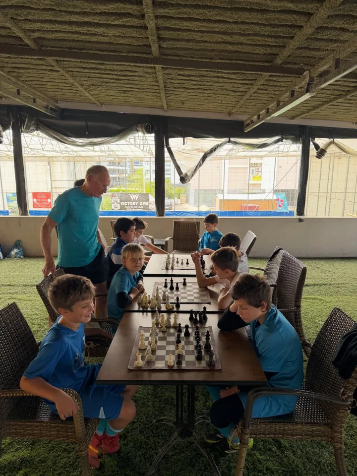
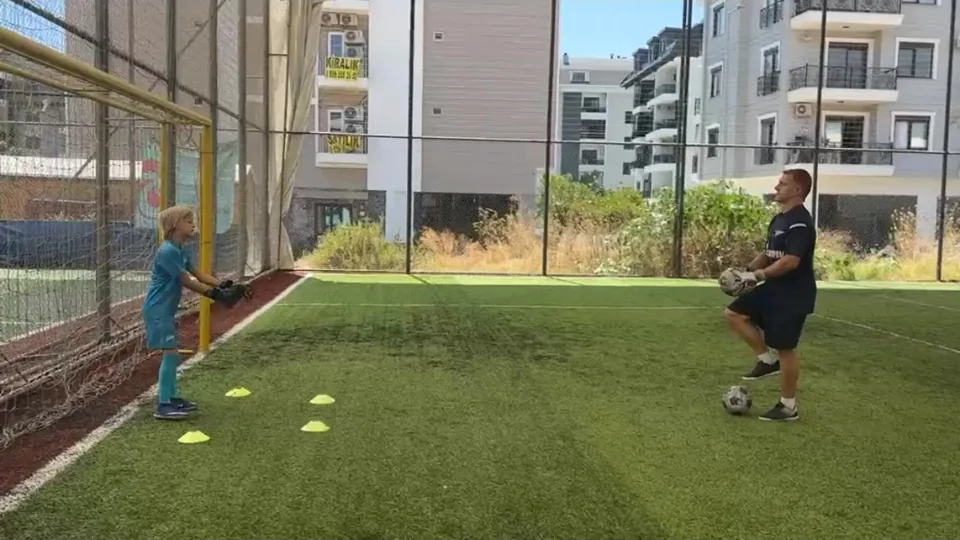
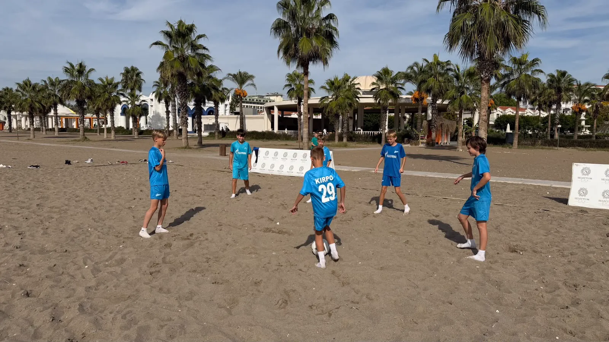

Настоящая команда.
Настоящие моменты.
Фотографии, тренировки и обычные моменты из жизни ребят. Это материалы, опубликованные самой школой, без сгенерированных фотографий.
Важное — в простых моментах.
Кадры из архива публикаций футбольной школы. Живые эмоции, движение и одна команда.



Фотографии и кадры из опубликованных материалов школы. Ниже — ещё 13 историй о тренировках и жизни команды.
Посмотрите, как это происходит.
Выберите историю. Фото и видео откроются в большом окне — только по вашему нажатию, без автоматической загрузки всех роликов.
Источник всех 13 публикаций — официальный Instagram @zenitalanya. Если Instagram ограничит встроенный просмотр, откройте оригинал из окна истории.
Хотите узнать о тренировке?
Сформируйте короткий вопрос администратору. На сайте нет регистрации: сообщение откроется в WhatsApp, и вы сами решите, отправлять ли его.
Группа, расписание, площадка, стоимость и пробное занятие уточняются у школы. Это не официальный сайт клуба.